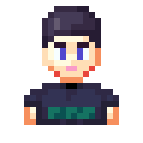
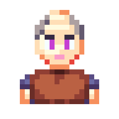
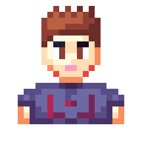
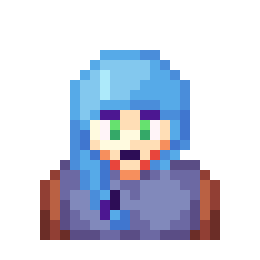

Od teraz można wybrać tabele wyników monet oraz XP.
"Jestem Rane!
Moim zadaniem jest wprowadzić ciebie w tajniki przeszukiwania! Jak już udało Ci się zauważyć wystarczy wpisać /search, lecz można jeszcze wybrać miejsce! Wystarczy wpisać /search miejsce: i wybrać miejsce z listy. Te miejsca można zdobywać w różne sposoby najpopularniejszym jest stworzenie KULI danego miejsca i użycie jej w /use. Przeszukiwanie może Ci dać monety, przedmioty, xp lub możesz też nie znaleźć nic, ale się nie poddawaj!
Masz jeszcze jakieś pytania? Jeśli nie to wyruszaj na wyprawę :D"
-> "Witaj! Jestem Rane!
Moim zadaniem jest wprowadzić ciebie w tajniki przeszukiwania! Jak już udało Ci się zauważyć wystarczy wpisać search, lecz to nie wszystko. Można jeszcze wybrać miejsce! Wystarczy wpisać search i kliknąć opcję miejsce i wybrać miejsce z listy. Te miejsca można zdobywać w różne sposoby. Najczęstszym jest stworzenie Kuli danego miejsca i użycie jej w /use. Przeszukiwanie może ci dać monety, przedmioty, xp, lecz mogą się zdarzyć sytuacje gdzie nic nie znajedziesz. Przede wszystkim pamiętaj... Nigdy się nie poddawaj!
Masz jeszcze jakieś pytania?"
"Handlarze! Jedna z moich ulubionych rzeczy na wyprawach!
Pojawiają się czasem na twojej drodze oferując wymiany przedmiot za przedmiot. Możesz dokonać do 3 razy takiej wymiany zanim kupiec będzie musiał uzupełnić zapasy.
Masz jeszcze jakieś pytania?"
-> "Handlarze! Czasem możesz znaleźć ich sklepiki tutaj w różnych miejscach. Możesz się z nimi wymieniać przedmiot za przedmiot. Tutaj w Lesie jest jeden handlarz, stary Kusel Skarrd. Ceny ma trochę nie ciekawe...
Masz jeszcze jakieś pytania?"
"Struktury... Daj chwilę pomyśleć...
No tak! Struktury czasem spotkasz podczas wędrowania przez różne lokalizacje. Czasem się zdarzy, że skarbu będzie strzegł jakiś wróg, więc nie zapomnij by na wyprawy brać swoją broń! Gdy już pokonasz przeciwników ukarzą się 3 skrzynie! Jedna z nich jest pusta, a w pozostałych dwóch jest bardzo fajna zawartość!
Są kolejne pytania?"
-> "Struktury..? O czym ty mówisz..? Nic takiego nie ma tutaj w Lesie... Niestety nie mogę ci nic o nich opowiedzieć...
Są kolejne pytania?"
"Bym zapomniała hah...
Domyślne lokalizacje są używane by za każdym razem nie trzeba było wpisywać miejsca w /search. Aby ustawić jakąś lokalizację na domyślną wystarczy użyć /set_deafaul search miejsce:. Jako miejsce wybierz lokalizację, którą chcesz i jest na liście.
Masz jeszcze jakieś pytania?"
-> "Rajciu... Powinnam o tym powiedzieć odrazu... Hah...
Domyślne lokalizacje są używane by za każdym razem nie trzeba było wpisywać miejsca podczas używania search. Aby ustawić jakąś lokalizację na domyślną wystarczy użyć set default search. Znajdź lokalizację, którą chcesz i wybierz ją z listy.
Masz jeszcze jakieś pytania?"
"Hahaha...
Już Ci mówiłam, jestem Rane, podróżniczka! Również jestem osobą, która ma Ci przedstawić piękny świat Erimu!
Może zmienimy temat...
Są jakieś inne pytania?"
-> "...
Czemu pytasz?
Przecież mówiłam, że nazywam się Rane...
Tyle powinno ci wystarczyć...
Nie musisz się o to więcej pytać...
Masz jeszcze jakieś pytania?"
"Witaj Podróżniku!
Jestem Kerreus ja też jestem podróżnikiem. Moim zadaniem jest informowanie moich młodszych kolegów o przydatnych miejscach. Z powodu tego, że nim jesteś mam Ci do przekazania trzy rzeczy. Możesz wziąć udział w treningu na Arenie Treningowej, żeby dowiedzieć się jak walczyć. To bardzo przydatna wiedza, ponieważ na drogach czyha wiele niebezpieczeństw. Jest również kopalnia, w której możesz się nauczyć pozyskiwania surowców. To też jest bardzo przydatne, bo ze zdobytych surowców można wytwarzać przedmioty. Na koniec, tu w lesie znajdują się dwaj handlarze, jeden z nich sprzedaje przedmiot niezbędny do dostania się do Jaskini, w której są skarby. Drugi jest, jakby do powiedzieć, dziwny. Zalecam, żeby omijać go szerokim łukiem.
No to teraz wyruszaj w drogę. Może jeszcze kiedyś się spotkamy!" -> "Witaj Kolego!
Nazywam się Kerreus Gorua. Jestem podróżnikiem. Jako członek Gildii moim zadaniem jest informowanie moich młodszych kolegów o tym jak rozpocząć swoją przygodę. Z powodu tego, że nim jesteś mam ci do przekazania trzy informacje. Na Arenie Treningowej możesz wziąć udział w treningu walki, żeby dowiedzieć się jak walczyć. To bardzo przydatna wiedza, ponieważ na drogach czyha wiele niebezpieczeństw. Moja siostra prowadzi szkolenia, więc mogę ciebie zapewnić, że się nauczysz. Jest również kopalnia, w której możesz pozyskać surowce, pierwsza twoja wizyta jest za darmo. Niestety potem trzeba drogo płacić. Na koniec, trochę o handlarzach. Tutaj w Lesie znajdują się dwóch handlarzy. Jeden z nich, nazywa się Kusel. Sprzedaje on przedmiot niezbędny do dostania się do Jaskini. Pewnie będzie wymagał od ciebie ukończenia zadania wymyślonego przez niego, lecz skarby z Jaskini są tego warte. Drugi jest... jakby to powiedzieć... dziwny. Wiecznie zakapturzony... Najlepiej unikaj go, ale jeśli wejdziesz do jego sklepu, uciekaj z tamtąd jak najszybciej.
To by było na tyle. Dłużej ciebie nie zatrzymuje. Do zobaczenia! Może jeszcze kiedyś się spotkamy!"



